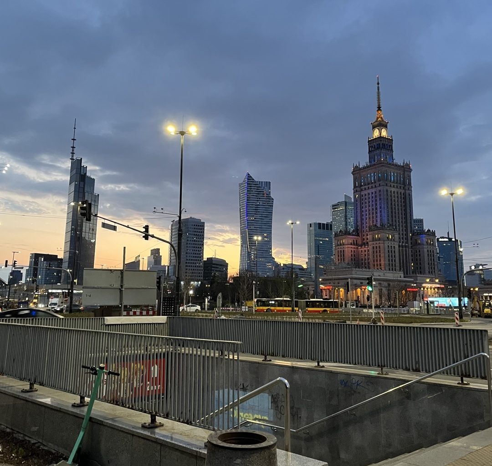
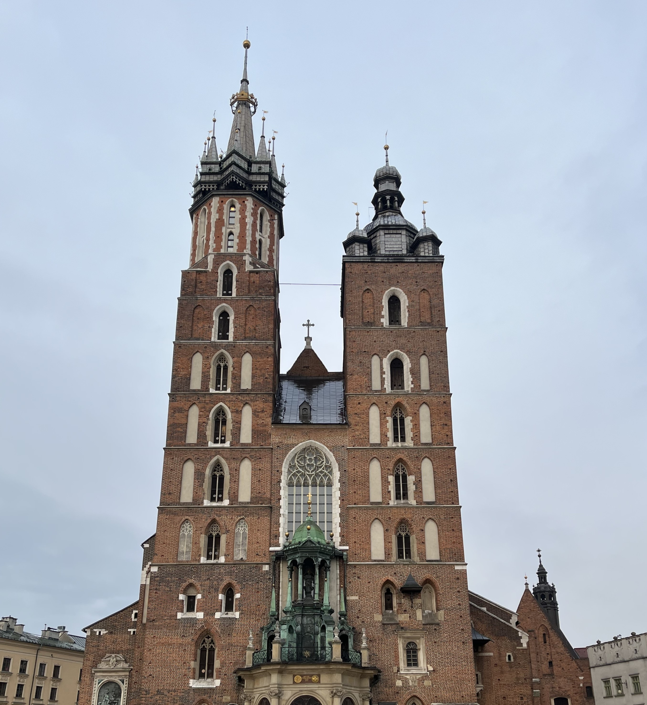
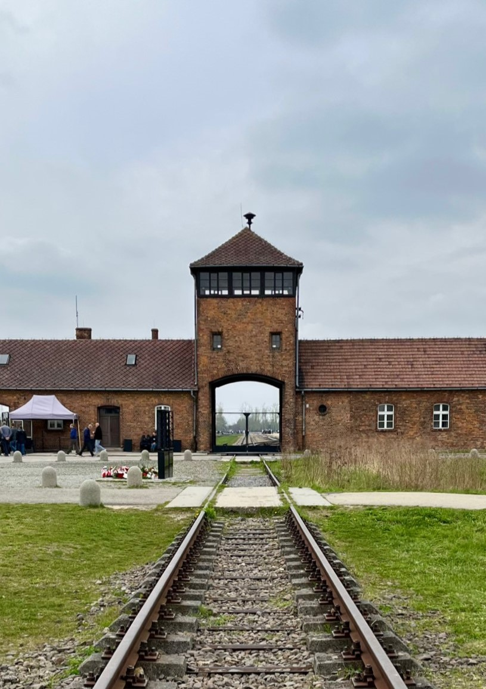
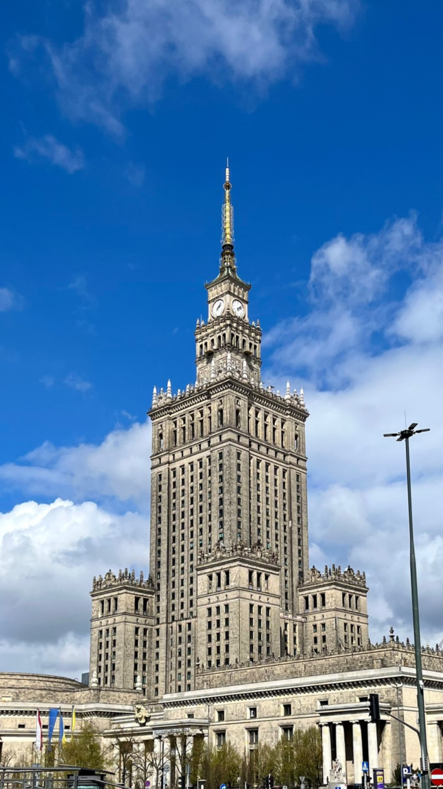
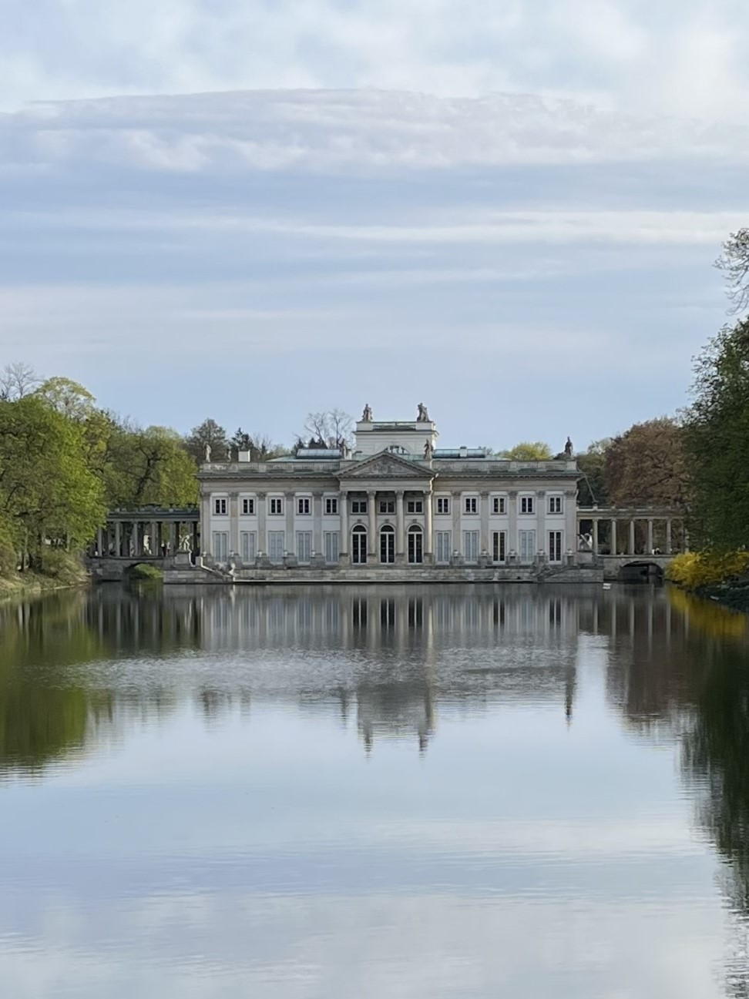
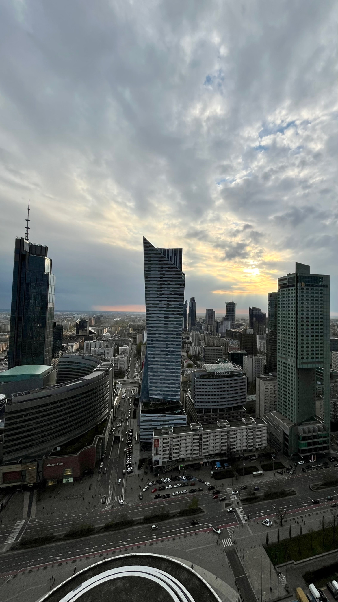

Polonia: Cracovia e Varsavia
Un viaggio di 5 giorni tra le città storiche e i musei polacchi
Panoramica dell'Itinerario
Questo itinerario di 5 giorni ti porterà alla scoperta di Cracovia e Varsavia, tra monumenti storici, quartieri caratteristici e musei iconici. In particolare, visiterai luoghi significativi come il quartiere ebraico di Cracovia, Auschwitz e Birkenau, castelli, chiese e piazze principali. Potrai immergerti nella cultura polacca, assaggiare la cucina locale e vivere esperienze indimenticabili tra storia, arte e passeggiate cittadine.
Itinerario Giorno per Giorno
Arrivo a Cracovia

Attività:
- Mattina: Arrivo all'aeroporto internazionale di Cracovia e trasferimento verso il centro città. All'uscita dell'aeroporto è possibile prendere un bus pubblico diretto che in circa 30 minuti porta nel centro storico con un costo molto economico, intorno a €0,80. Dopo l'arrivo, sistemazione in hotel o appartamento e prima passeggiata nei dintorni per iniziare a scoprire la città.
- Pomeriggio: Inizio della visita del centro storico di Cracovia, con ingresso dalla Porta di San Floriano e proseguimento verso la splendida Rynek Główny, una delle piazze medievali più grandi d'Europa. Visita delle principali chiese della zona, tra cui la Basilica di Santa Maria, la Church of St. Barbara, la Church of St. Wojciech e la Basilica della Santa Trinità. Proseguimento tra le vie del centro con visita anche alla Chiesa di Sant'Andrea e agli altri edifici storici della zona, alternando ingressi interni e viste esterne.
- Sera: Passeggiata nel centro storico illuminato e cena in un ristorante tipico. È il momento ideale per iniziare a provare la cucina polacca con piatti come i pierogi o le zuppe tradizionali, accompagnati da una birra locale.
Cracovia e Auschwitz-Birkenau

Attività:
- Mattina: Partenza presto dal centro di Cracovia per raggiungere Auschwitz-Birkenau. Il sito è raggiungibile comodamente in bus diretto fino a Oświęcim, con fermata davanti all'ingresso principale. Visita dei campi con biglietto acquistato online e audioguida in italiano. Il percorso comprende sia Auschwitz che Birkenau, collegati anche da una navetta gratuita, con una durata complessiva di circa 4-5 ore.
- Pomeriggio: Rientro a Cracovia e passeggiata nel quartiere ebraico Kazimierz, una delle zone più caratteristiche della città. Visita alla Roman Catholic Church of St. Catherine of Alexandria e passeggiata tra le vie storiche del quartiere. Possibilità di visitare anche l'Oskar Schindler Factory Museum, dedicato alla storia della città durante la Seconda Guerra Mondiale. Proseguimento verso il fiume per vedere il famoso Smok Wawelski, la statua del drago di Cracovia che sputa fuoco a intervalli regolari.
- Sera: Cena nel quartiere Kazimierz o rientro nel centro storico. Questa zona è perfetta per provare piatti tipici e fermarsi in uno dei tanti locali per assaggiare diverse birre polacche.
Trasferimento e visita a Varsavia

Attività:
- Mattina: Trasferimento da Cracovia a Varsavia. Il viaggio può essere effettuato comodamente in treno con una durata di circa 3 ore e un costo medio intorno ai €10. Arrivo nella capitale e sistemazione in hotel.
- Pomeriggio: Prima visita del centro storico di Varsavia con passeggiata nella Old Town Market Square, cuore della città vecchia, e sosta alla famosa fontana della Sirenetta. Proseguimento verso la Piazza del Castello con ingresso al Castello Reale, visitabile internamente, e passeggiata lungo le vie che portano fino al Presidential Palace, osservabile dall'esterno.
- Sera: Salita al Palazzo della Cultura e della Scienza per ammirare la città dall'alto. La vista panoramica è particolarmente suggestiva al tramonto, quando la città si illumina progressivamente. Dopo la visita, passeggiata serale nel centro di Varsavia.
Musei e monumenti di Varsavia

Attività:
- Mattina: Visita al Museo dell'Armata Polacca, con una durata media di circa un'ora e mezza, ideale per conoscere la storia militare del paese attraverso esposizioni e reperti storici.
- Pomeriggio: Proseguimento con la visita al POLIN - Museo della Storia degli Ebrei Polacchi, un museo moderno e interattivo che racconta oltre mille anni di storia e cultura ebraica in Polonia. La visita completa richiede circa due ore per essere apprezzata al meglio.
- Sera: Passeggiata nel Parco Łazienki, uno dei luoghi più suggestivi di Varsavia, con vista sul laghetto e sul Palace on the Isle. Possibilità di fermarsi per una cena al sacco immersi nel verde e godersi un momento di relax lontano dal traffico cittadino.
Partenza

Attività:
- Mattina: Ultima passeggiata nel centro di Varsavia per una colazione tranquilla e per acquistare souvenir. Le vie del centro offrono numerosi bar e negozi dove è possibile fermarsi prima della partenza.
- Pomeriggio: Per il rientro ho utilizzato l'aeroporto di Modlin, situato a circa 40 km dal centro di Varsavia e molto utilizzato dalle compagnie low cost. Per raggiungerlo ho scelto la soluzione più economica: treno + bus navetta, con un costo di circa 5€ e un tempo totale di circa 50 minuti. In alternativa un taxi può superare i 30€ per un viaggio di circa 30 minuti. Varsavia dispone comunque di più aeroporti: il principale è quello di Chopin, molto più vicino al centro e meglio collegato con i mezzi pubblici, risultando generalmente più comodo rispetto a Modlin.
Riepilogo Costi Stimati
*Costi esclusi: voli, assicurazione viaggio, spese personali
Consigli Pratici
Quando Andare
A Maggio, Giugno e Settembre il clima è mite e ideale per visitare le città. Luglio e Agosto possono essere leggermente caldi.
Come Muoversi
Le città si visitano facilmente a piedi nel centro storico. Per spostamenti più lunghi, è comodo utilizzare mezzi pubblici o taxi. Inoltre, è possibile raggiungere Varsavia da Cracovia in circa 3 ore con un treno, con un costo medio di circa 10€.
Dove Alloggiare
Scegli un hotel o appartamento vicino al centro delle città principali per avere attrazioni e ristoranti a portata di mano, i prezzi sono molto convenienti.
Cosa Assaggiare
Prova piatti tipici polacchi come pierogi, żurek, bigos, oscypek e dolci locali.
Come Visitare Auschwitz-Birkenau
Per raggiungere Auschwitz è sufficiente prendere un bus in direzione Oświęcim dal centro di Cracovia, che ferma davanti all'ingresso principale, con un costo di circa 0,80€. Si consiglia di acquistare il biglietto con guida italiana direttamente dal sito ufficiale, che include anche la navetta gratuita da Auschwitz a Birkenau con la guida.